A collision is an event in which two or more bodies exert forces on each other for a relatively short time. Although the most common colloquial use of the word "collision" refers to incidents in which two or more objects collide with great force, the scientific use of the word "collision" implies nothing about the magnitude of the force.
Some examples of physical interactions that scientists would consider collisions:
An insect touches its antenna to the leaf of a plant. The antenna is said to collide with leaf.
A cat walks through the grass. Each contact that its paws make with the ground is a collision. Each brush of its fur against a blade of grass is a collision.
When a boxer throws a punch, his fist is said to collide with the opponent's face.
A black hole merger
Types of Collisions
A collision is an event where momentum or kinetic energy is transferred from one object to another. Momentum (p) is the product of mass and velocity (p = mv). A large truck massing 10,000 kg and moving at 2 meters/sec has the same momentum as a 1,000 kg compact car moving at 20 meters/sec; they both have p = 20,000 kg m/sec. The other quantity that can be transferred in a collision is kinetic energy. Kinetic energy is the energy of motion; it is defined as K = (1/2) m v^2. The relationship between kinetic energy and mass is linear, which means that a vehicle massing twice as much has twice as much kinetic energy. The relationship between kinetic energy and velocity is exponential, which means that as you increase your speed, kinetic energy increases dramatically.
There are two general types of collisions in physics:
Elastic
Inelastic
Elastic Collision
An elastic collision occurs when the two objects "bounce" apart when they collide. Two rubber balls are a good example.
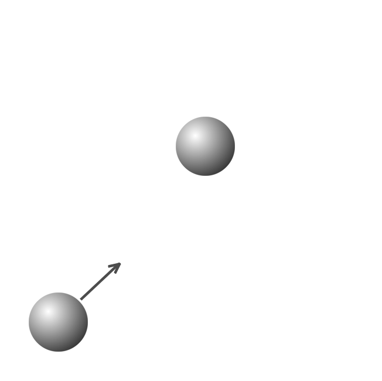
In an elastic collision, both momentum and kinetic energy are conserved. Almost no energy is lost to sound, heat, or deformation. The first rubber ball deforms, but then quickly bounces back to its former shape, and transfers almost all the kinetic energy to the second ball.
A car's bumper works by using this principle to prevent damage. In a low speed collision, the kinetic energy is small enough that the bumper can deform and then bounce back, transferring all the energy directly back into motion. Almost no energy is converted into heat, noise, or damage to the body of the car, as it would in an inelastic collision.
However, car bumpers are often made to collapse if the speed is high enough, and not use the benefits of an elastic collision. The rational is that if you are going to collide with something at a high speed, it is better to allow the kinetic energy to crumple the bumper in an inelastic collision than let the bumper shake you around as your car bounces in an elastic collision. Making their bumpers this way benefits the car companies: they get to sell you a new bumper, and you can't sue them for whiplash.
Suppose two similar trolleys are traveling toward each other with equal speed. They collide, bouncing off each other with no loss in speed. This collision is perfectly elastic because no energy has been lost.
In reality, examples of perfectly elastic collisions are not part of our everyday experience. Some collisions between atoms in gases are examples of perfectly elastic collisions. However, there are some examples of collisions in mechanics where the energy lost can be negligible. These collisions can be considered elastic, even though they are not perfectly elastic. Collisions of rigid billiard balls or the balls in a Newton's cradle are two such examples.
Why would we ever approximate a collision as perfectly elastic?
Given that no mechanics problem we are likely to encounter involves a perfectly elastic collision, it may seem that the concept is of little practical use. However, in practice it is often very useful. This is because the requirement that kinetic energy is conserved provides an additional constraint to our equations of motion. This allows us to solve problems in which we would otherwise have too many unknowns. Often the solution will be quite adequate because the collision is 'close enough' to perfectly elastic.
Suppose a head-on elastic collision occurs between two trolleys (A and B) on a track. We want to know the final velocities (subscript f) for both the trolleys, but are only given the initial velocities vAi and v
Ai. Applying conservation of momentum we can see that we have one equation with two unknowns, vAf,
vAf and vBF:
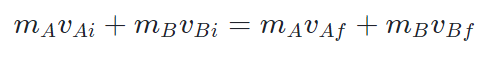
Because kinetic energy is also conserved, we simultaneously have another constraint:
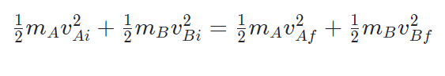
As we now have two equations with two unknowns, we know that we can completely solve the system using simultaneous equations to determine both velocities.
Solving these equations is somewhat tedious. For now, we simply state the result:
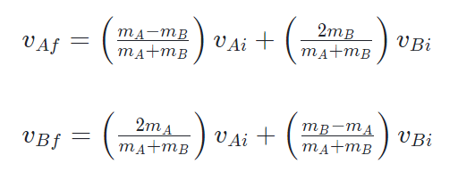
Inelastic Collision
An inelastic collisions occurs when two objects collide and do not bounce away from each other.
Momentum is conserved, because the total momentum of both objects before and after the collision is the same. However, kinetic energy is not conserved. Some of the kinetic energy is converted into sound, heat, and deformation of the objects. A high speed car collision is an inelastic collision. In the above example, if you calculated the momentum of the cars before the collision and added it together, it would be equal to the momentum after the collision when the two cars are stuck together. However, if you calculated the kinetic energy before and after the collision, you would find some of it had been converted to other forms of energy.
In the real world most collisions are somewhere in between perfectly elastic and perfectly inelastic. A ball dropped from a height, h above a surface typically bounces back to some height less than h, depending on how rigid the ball is. Such collisions are simply called inelastic collisions.
Are there any examples of perfectly inelastic collisions?
The ballistic pendulum is a practical device in which an inelastic collision takes place. Until the advent of modern instrumentation, the ballistic pendulum was widely used to measure the speed of projectiles.
In this device, a projectile is fired into a suspended heavy wooden block. The wooden block is initially stationary. Following the collision the projectile becomes embedded in the block. Some kinetic energy gets transformed into heat, sound, and used to deform the block. However, momentum must still be conserved. Consequently, the block swings away at some speed. After the collision, the block behaves as a pendulum in which total mechanical energy is conserved. Because of this we can use the maximum height of the swing to determine the kinetic energy of the block after the collision, then using conservation of momentum we can find the initial speed of the projectile.
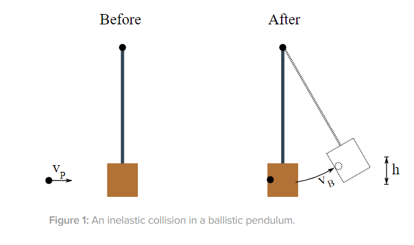
We know that only momentum is conserved in this collision, so the momentum of the projectile before the collision must be equal to the momentum of the projectile-block system immediately after the collision. Here we use the subscript B for the block, P for the projectile. vB is the velocity of the block just after the impact.
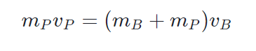
after re-arranging:
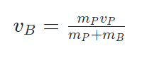
We know that after the collision, the mechanical energy of the block-bullet system is conserved, so if the block rises up to a maximum height hhh under a gravitational acceleration ggg then:
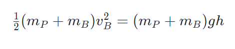
after re-arranging:
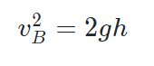
Substituting into our previous conservation of momentum expression for the initial velocity of the block:
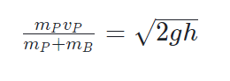
so after final rearranging:
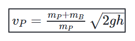
Type Of Collision
Elastic
Perfect Inelastic
non-Perfect Inelastic
Conservation of Momentum
yes
yes
yes
Conservation of Kinetic Energy
yes
no
no
Which is more damaging – a mostly elastic or mostly inelastic vehicle collision?
This depends on what you are concerned about damaging – the vehicle or the occupant!
Suppose a vehicle collides elastically with another object. The vehicle will necessarily rebound. The change in momentum as the vehicle rebounds is greater than in an equivalent inelastic collision. The force on an occupant is therefore greater and that is clearly worse for the occupant. On the other hand, because it is an elastic collision no energy will be dissipated in deforming the vehicle. Damage to the structure of the vehicle would therefore be minimized.
Modern vehicles are designed to make use of both inelastic and elastic collisions in the event of an accident. The frame of a vehicle is designed to absorb energy in a collision through deformation of crumple zones built in to the structure of the vehicle. The interior passenger compartment however is designed to be strong so that damage to the occupants is minimized.